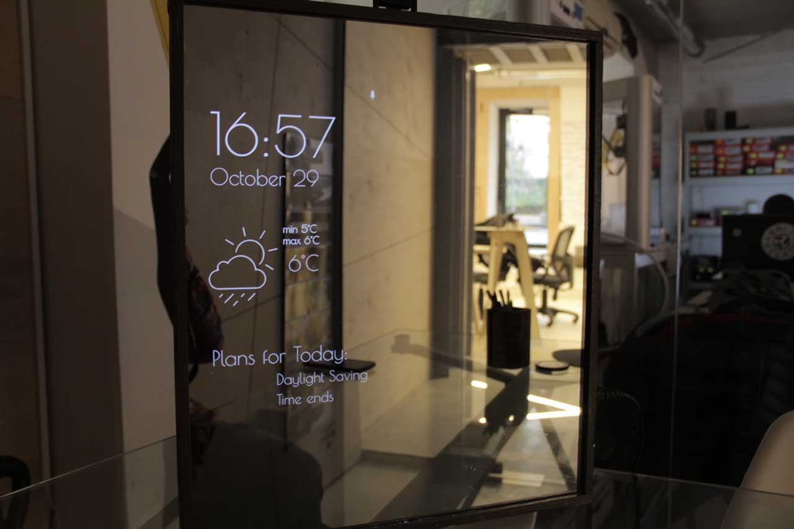

What is Magic Mirror?
Magic mirror is your a mirror that can help you get dressed in the morning, display weather, time and plans. Me in a team of 3 people were working on it as a hobby project this past summer
Images
How to make?
Guide comming soon ^_^
Authors and Contributors
Originally created by Fedor Bobylev, Tanya Batsenko, Zhenya Kravchenko